Ceno браузером
Поділіться Інтернетом! Ceno — це перший у світі веб-браузер, який покращується з кожною інсталяцією. Він пропонує звичайний досвід перегляду Інтернету, але використовує технологію peer-to-peer для доставки та обміну веб-сайтами між усіма учасниками. Ceno також можна використовувати для обходу мережевих обмежень і перегляду вмісту під час відключення.
🔓 👀 Доступ до заблокованих медіа та інших вебсайтів. Безкоштовно та анонімно в особистому режимі.
🚫🌴 У разі відключення інтернету у вашому регіоні ви все ще зможете читати новини та залишатися на зв'язку.
📱🤝📱 Живете в країні з безкоштовним доступом до Інтернету? Допоможіть людям в інших країнах обійти цензуру та отримати доступ до незалежної інформації лише одним дотиком. Дізнайтеся більше на нашому вебсайті.
📖👐 Браузер Ceno побудовано на Ouinet, бібліотеці з відкритим кодом. Ви можете перевірити код програми на GitLab.
🛠🦹🏻 Наш продукт може працювати нестабільно через постійний розвиток технологій цензури. Ми постійно вдосконалюємо його, щоб забезпечити вам постійний доступ. Якщо веб-сайти завантажуються повільно або не відкриваються, не видаляйте додаток — спробуйте скористатися ним знову через кілька днів або зверніться до нашої служби підтримки: support [at] ceno [dot] app
Ceno розроблено компанією eQualitie. Це повністю безкоштовний браузер з відкритим кодом, який не потребує реєстрації та повністю вільний від реклами.
Ми збираємо деякі анонімні показники щодо додатків та мережі. Особиста інформація не збирається, а дані ніколи не передаються третім особам. Збір показників увімкнено за замовчуванням, але користувачі можуть будь-коли відмовитися від нього, перейшовши до [Налаштування > Показники у фоновому режимі
Показники Ceno](./settings.html#background-metrics). Більше інформації про те, що ми збираємо, див. у нашій Політиці конфіденційності.
Ознайомлення
Ceno — це мобільний веб-браузер на базі Mozilla Android Components. Він призначений для доступу та розповсюдження веб-контенту (веб-сайтів) за допомогою нового підходу, що базується на BitTorrent — децентралізованій мережі обміну файлами. Перевага Ceno полягає в тому, що він дозволяє обійти сучасні методи інтернет-цензури та надає людям можливість отримувати доступ до веб-інформації та обмінюватися нею в регіонах, де зв'язок перерваний або порушений.
Браузер Ceno дозволяє вам отримати доступ до будь-якого веб-сайту в Інтернеті, навіть якщо він зазвичай недоступний у вашій країні чи регіоні.
Якщо веб-сайт, який ви хочете відвідати, є доступним, Ceno отримає до нього прямий доступ і буде працювати як будь-який інший браузер. Але якщо ви не можете отримати прямий доступ до потрібного веб-сайту, Ceno спробує отримати доступ до нього через власну мережу peer-to-peer. Ceno збереже в кеші вміст веб-сайту, до якого було отримано доступ, і зробить його доступним для інших користувачів Ceno, використовуючи технологію peer-to-peer.
Коли інші члени мережі Ceno запитують той самий контент і не можуть отримати до нього прямий доступ, Ceno визначає, що запитуваний веб-сайт зберігається в кеші вашого додатка Ceno. Звідти він буде завантажений з вашого пристрою в Інтернет і перенаправлений особі, яка його запитувала. У Налаштуваннях вашого додатка Ceno ви зможете побачити, скільки даних було збережено на вашому пристрої, а також усі веб-сайти, якими ви поділилися.
Звісно, це стосується лише вебсайтів, які ви відвідуєте в Загальнодоступному режимі.
Для всіх ваших особистих потреб, таких як електронна пошта, повідомлення, підписки або покупки, ми передбачили особистий режим. Коли ви виходите в Інтернет у цьому режимі, додаток Ceno не зберігає сторінки, які ви відвідуєте, і, отже, не передає їх нікому іншому.
Цей посібник користувача містить детальну інформацію про функції Ceno та їхнє призначення.
Сподіваємося, вам сподобається користуватися нашим додатком.
Встановлення
Ceno для Android можна завантажити з таких платформ: Google Play, Gitlab, Paskoocheh або dComms.
Please download the app and install it. Once installed, tap on Open and the app will welcome you to its Onboarding screens.
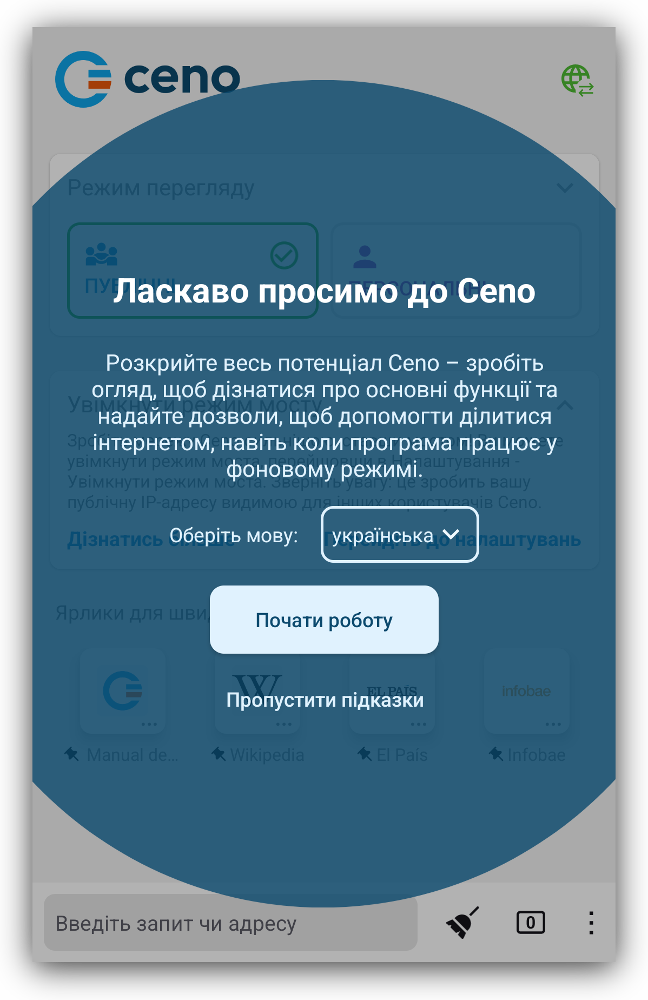
Перший запуск
Екскурсія з гідом
Коли ви вперше запустите додаток Ceno, вам буде запропоновано невелику екскурсію по основних функціях Ceno, яку ви можете прийняти (натиснувши кнопку «Почати») або пропустити (натиснувши «Пропустити екскурсію»)
Цей огляд проведе вас через найважливіші функції, як показано на наступних екранах.
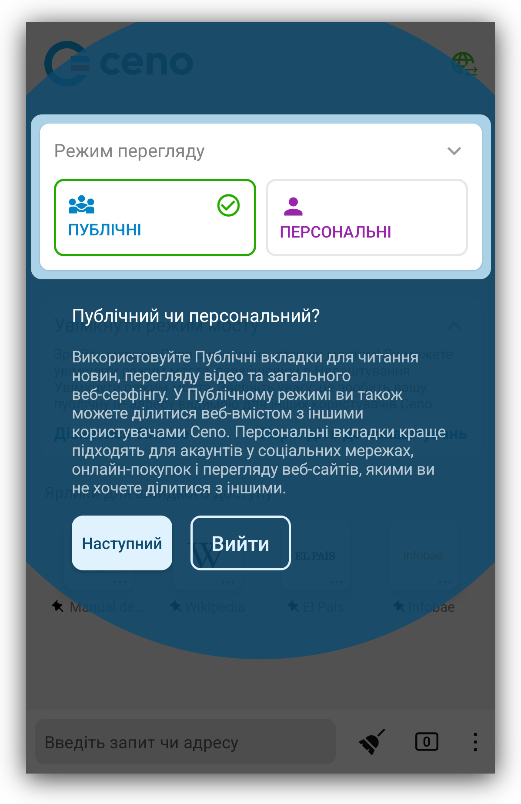
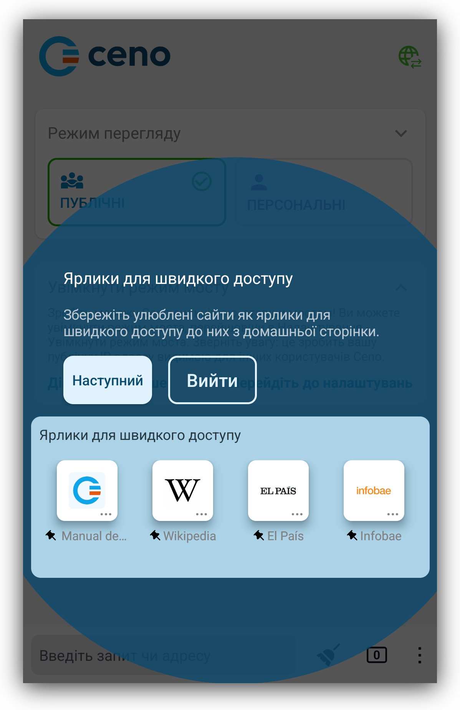
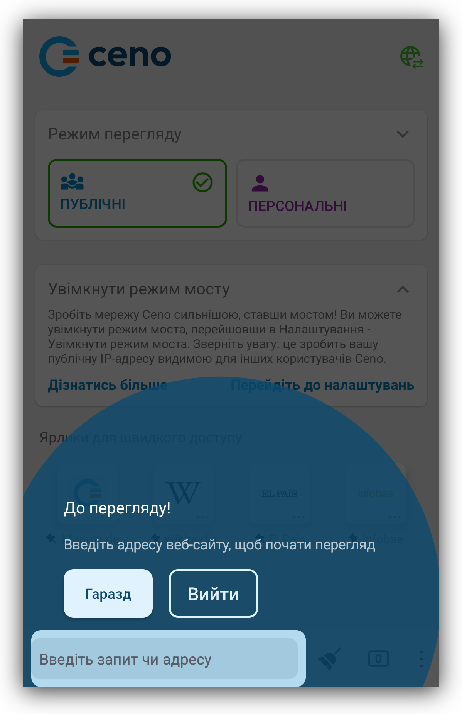
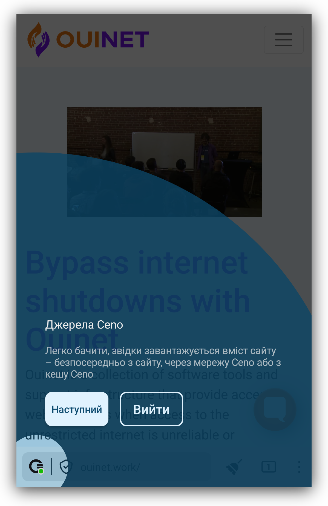
Дозволи
В кінці огляду вам буде запропоновано надати Ceno дозволи, необхідні для оптимального функціонування:
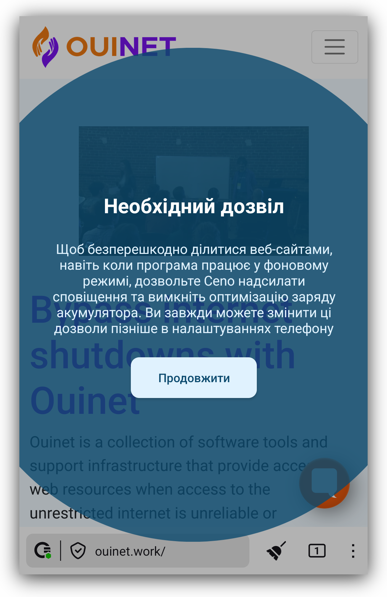
Коли ви натиснете «Продовжити», залежно від версії Android, яка встановлена на вашому телефоні, вам буде потрібно надати Ceno дозвіл на надсилання повідомлень та вимкнення оптимізації батареї. Деякі версії Android вимагають обох дозволів, а деякі — лише дозволу на вимкнення оптимізації батареї.
Сповіщення
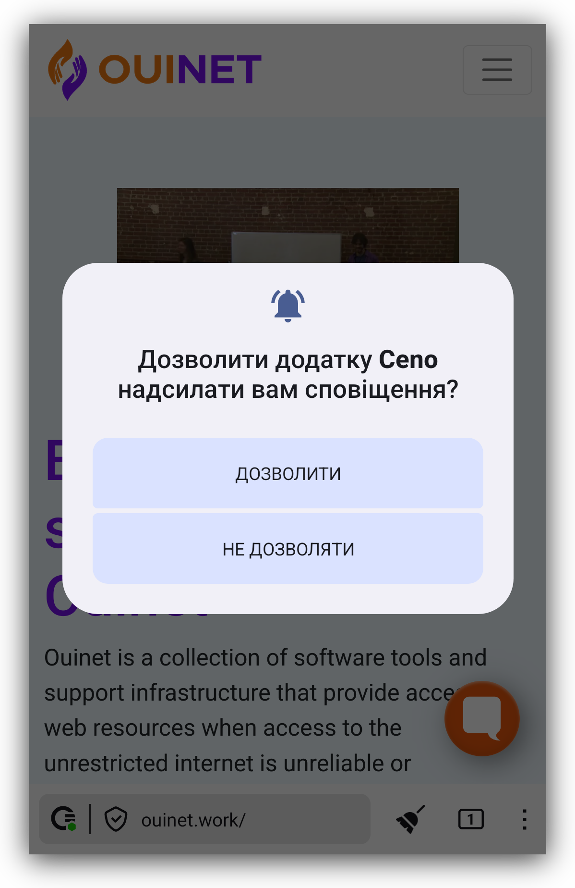
Коли ви дозволите Ceno надсилати вам сповіщення, програма відображатиме значок Ceno на панелі сповіщень.

Піктограма з’явиться, коли ви перейдете на перший вебсайт.
Ця піктограма позначає службу Ceno Browser, яка є частиною Ceno, що працює
постійно (навіть коли ви не переглядаєте веб-сторінки) і дозволяє іншим
користувачам Ceno отримувати з неї вміст у будь-який час. Оскільки робота такої
служби використовує ресурси мережі та процесора, ви можете зупинити її, коли ви
в дорозі (тобто не підключені до Wi-Fi або далеко від зарядного пристрою).
Натискання кнопки «Зупинити» одночасно зупинить роботу Ceno і його служби (доки
ви знову не відкриєте Ceno).
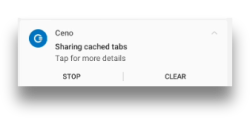
Натискання кнопки «Очистити» відкриє ще одне невелике сповіщення

Натискання кнопки «Так» призведе до видалення не тільки кешованих даних у додатку Ceno на вашому пристрої, але й усіх налаштувань, таких як положення адресного рядка за замовчуванням, світла тема, ваші улюблені та інші налаштування, які ви могли вибрати. Якщо ви натиснете кнопку «Так», Ceno буде зупинено, а всі його дані будуть видалені без додаткових запитань, фактично залишаючи ваш пристрій таким, ніби Ceno ніколи не використовувався.
Попередження: Android може зберігати інші сліди використання програми, окрім її даних, наприклад, у системному журналі
Зупинити оптимізацію використання акумулятора
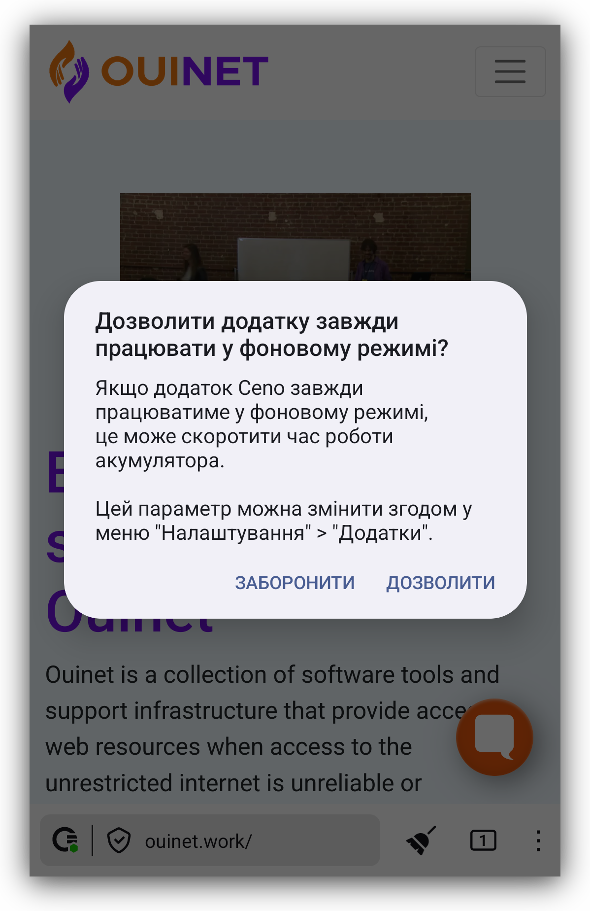
Ця опція зазвичай присутня в додатках, які повинні працювати у фоновому режимі, навіть коли вони не використовуються активно, як у випадку з додатком Ceno. За звичайних умов ваш телефон Android намагатиметься оптимізувати використання батареї різними додатками, які можуть працювати на вашому пристрої. Операційна система вашого телефону робить це, щоб продовжити час роботи акумулятора між двома зарядками. Для цього вона іноді зупиняє програми, які працюють і використовують акумулятор, але не використовуються вами активно. Коли ви дозволяєте Ceno припинити оптимізацію використання батареї, операційна система вашого телефону буде рідше зупиняти додаток Ceno, коли ви його активно не використовуєте. Дозвіл на роботу додатка Ceno навіть тоді, коли він активно не використовується, допомагає всій мережі Ceno peer-to-peer працювати краще і відповідати на більше запитів користувачів. Дозволяючи цю опцію, ви допомагаєте всім користувачам мережі Ceno.
Публічний чи персональний?
Після екранів реєстрації та дозволів додаток відображає головний екран. Як тільки екран з'явиться, ви помітите дві помітні кнопки під назвою «Публічний» та «Особистий». Вони дозволяють вибрати між публічним та особистим режимом перегляду.
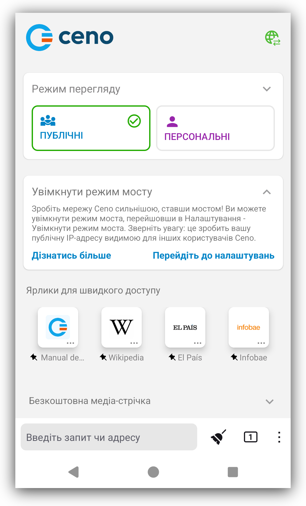
Публічний Перегляд
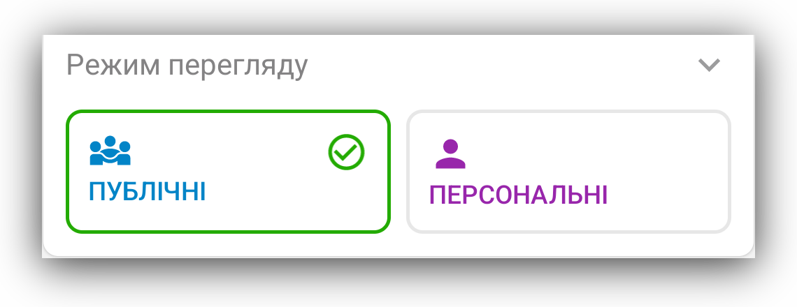
На зображенні нижче показано, як Ceno отримує вміст веб-сайту в режимі публічного перегляду.

Пунктирні лінії на цьому зображенні позначають запити та відповіді на вміст веб-сайту, а зірочки – зашифрований вміст.
У режимі публічного перегляду запити користувачів обробляються публічною
мережею Ceno. У цьому режимі користувачі запитують вміст веб-сайтів так само,
як і при використанні будь-якого іншого браузера. Якщо Ceno може отримати прямий
доступ до вихідного веб-сайту, він завантажить його вміст і доставить його
користувачеві — так само, як і більшість інших браузерів.
Однак, якщо Ceno не може підключитися до потрібного веб-сайту, він спробує
підключитися до нього через інжектори.
Форсунки
Інжектори — це захищені сервери, які відповідають за введення часто використовуваного контенту в мережу Ceno, а також за перевірку його автентичності та підписання. Інжектори розміщуються в стратегічних місцях, щоб вони залишалися доступними для користувачів в обмежених зонах і могли також досягати вихідних веб-сайтів. Вони допомагають отримувати бажаний контент або з вихідного веб-сайту, або з мережі Ceno і повертати його користувачеві, який його запросив. Вони управляються eQualitie.
Як користувач, вам не потрібно нічого робити, щоб підключитися до Інжектора — додаток робить це автоматично, коли ви запитуєте веб-сайт, до якого він не має безпосереднього доступу.
Мости
Мости — це пристрої, що належать окремим користувачам Ceno, які знаходяться в місцях з відносно необмеженим підключенням та доступом до Інтернету. До них можуть підключитися користувачі Ceno, які не можуть безпосередньо зайти на веб-сайти. Ці пристрої відповідають за пересилання зашифрованих запитів користувачів до інжекторів та зашифрованих відповідей назад до користувачів.
Мости не можуть читати запити та відповіді, які вони пересилають.
Кожен користувач Ceno може налаштувати свій пристрій як міст.
Перемикач Увімкнути режим мосту можна активувати або за посиланням на головній сторінці, або з вертикального меню з трьома крапками праворуч від адресного рядка.

На сторінці налаштувань переміщення перемикача Увімкнути режим мосту у положення УВІМК
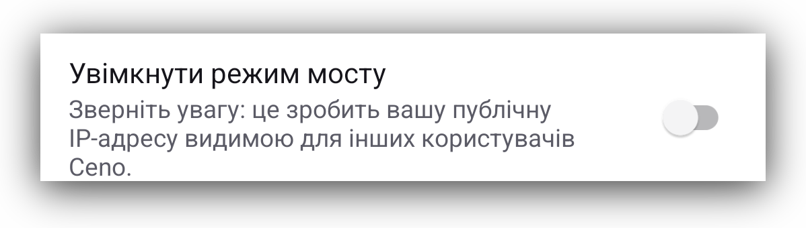
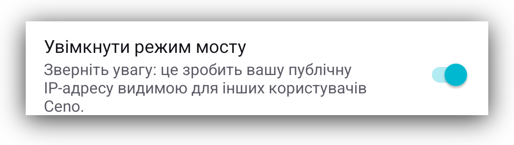
зробить ваш пристрій мостом для інших користувачів Ceno, чий доступ до Інтернету обмеженіший. Це вимагає перезапуску служб Ceno
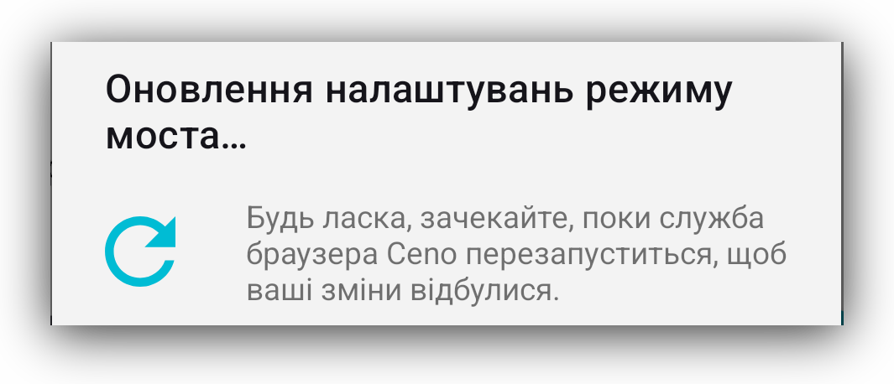
Після успішного встановлення режиму мосту ви отримаєте підтвердження.
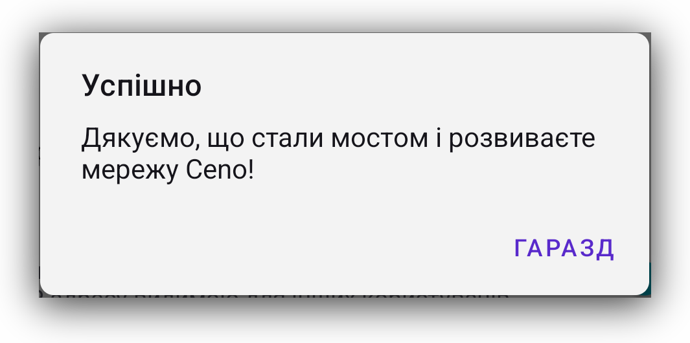
З цього моменту додаток Ceno на вашому пристрої може виступати як місток, який допомагає користувачам Ceno в обмежених зонах отримувати доступ до бажаного контенту.
Однак, для мостового підключення також потрібні певні налаштування вашого маршрутизатора або мережі, які описані в розділі Конфігурація моста.
Кеш Ceno
І останнє, але не менш важливе, кеш Ceno. Всі користувачі Ceno є членами цієї однорангової мережі, вони зберігають вміст веб-сайтів, отриманий через публічну мережу Ceno, і обмінюються ним між собою.
У режимі публічного перегляду Ceno отримує запитуваний контент, використовуючи будь-який із цих каналів зв'язку. Він видаляє всі приватні дані (такі як паролі та файли cookie) з веб-трафіку, щоб уникнути їх витоку іншим користувачам.
Публічний перегляд – коли його використовувати
Ця опція призначена для вас, користувача, щоб отримати доступ до більшості речей, які не вимагають входу в систему або введення будь-яких особистих даних. Ви можете використовувати її для перегляду, прослуховування подкастів, перегляду новин, читання блогів або статей, стеження за спортом, наукою, музикою, подіями або іншим контентом. У режимі публічного перегляду Ceno може спробувати отримати доступ до запитуваного контенту безпосередньо з веб-сайтів, з публічної мережі Ceno (інжектори та мости) або від інших користувачів Ceno (розподілений кеш).
Зверніть увагу, що деякий контент, який не вважається безпечним для спільного використання, ніколи не буде вставлений, незалежно від того, скільки людей отримують його за допомогою публічного перегляду. Сюди входить контент, позначений як приватний сервером-джерелом, контент, що вимагає автентифікації, та деякий трафік, що обмінюється певними динамічними веб-додатками.
Джерела веб-сайтів у режимі публічного перегляду
Коли ви хочете отримати доступ до веб-сайту, використовуючи режим публічного перегляду Ceno, програма може спробувати отримати вміст безпосередньо з веб-сайту або через публічну мережу Ceno. У наступному розділі ми опишемо цей процес більш детально.
Контент отримано безпосередньо з веб-сайту
Ceno отримуватиме потрібний контент безпосередньо з вихідного сервера, коли цей сервер буде доступний. Це той самий спосіб доступу до будь-якого веб-сайту через більшість інших популярних браузерів.
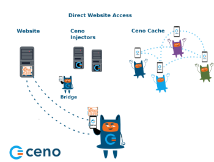
Коли ви відвідуєте веб-сайти таким чином, вони не зберігаються у вашому кеші, і ви не можете ділитися ними з іншими членами мережі Ceno. Коли Ceno отримує вміст з вихідного сервера, маленька кнопка Ceno в адресному рядку буде позначена зеленою крапкою.
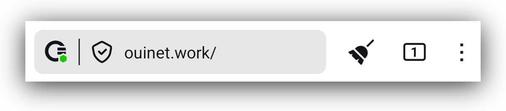
Якщо ви натиснете цю кнопку, ви побачите, скільки компонентів запитуваного веб-сайту було отримано з веб-сайту, мережі Ceno або кешу Ceno.
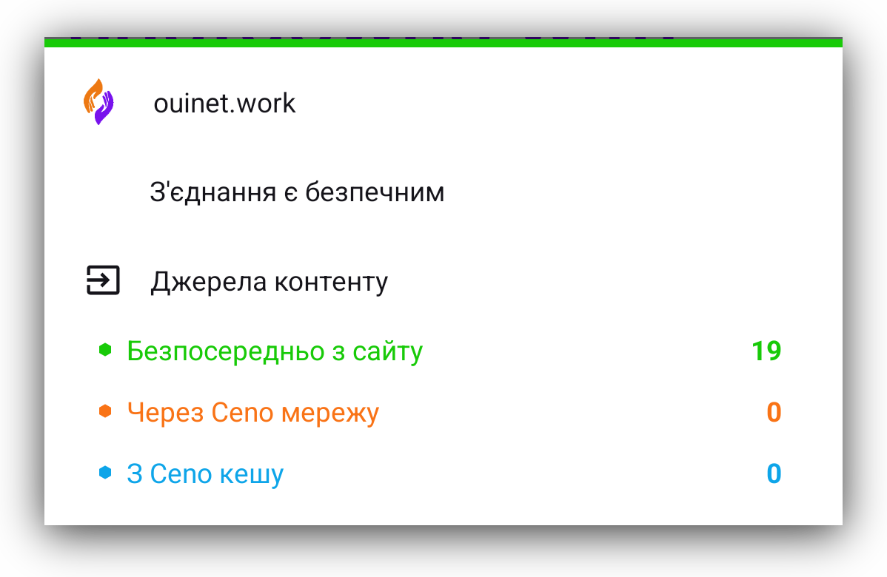
Якщо ви перейдете до Налаштування > Дані, ви можете перевірити, чи не зберігаються дані у вашому кеші після того, як ви отримали доступ до веб-сайту безпосередньо з його сервера.
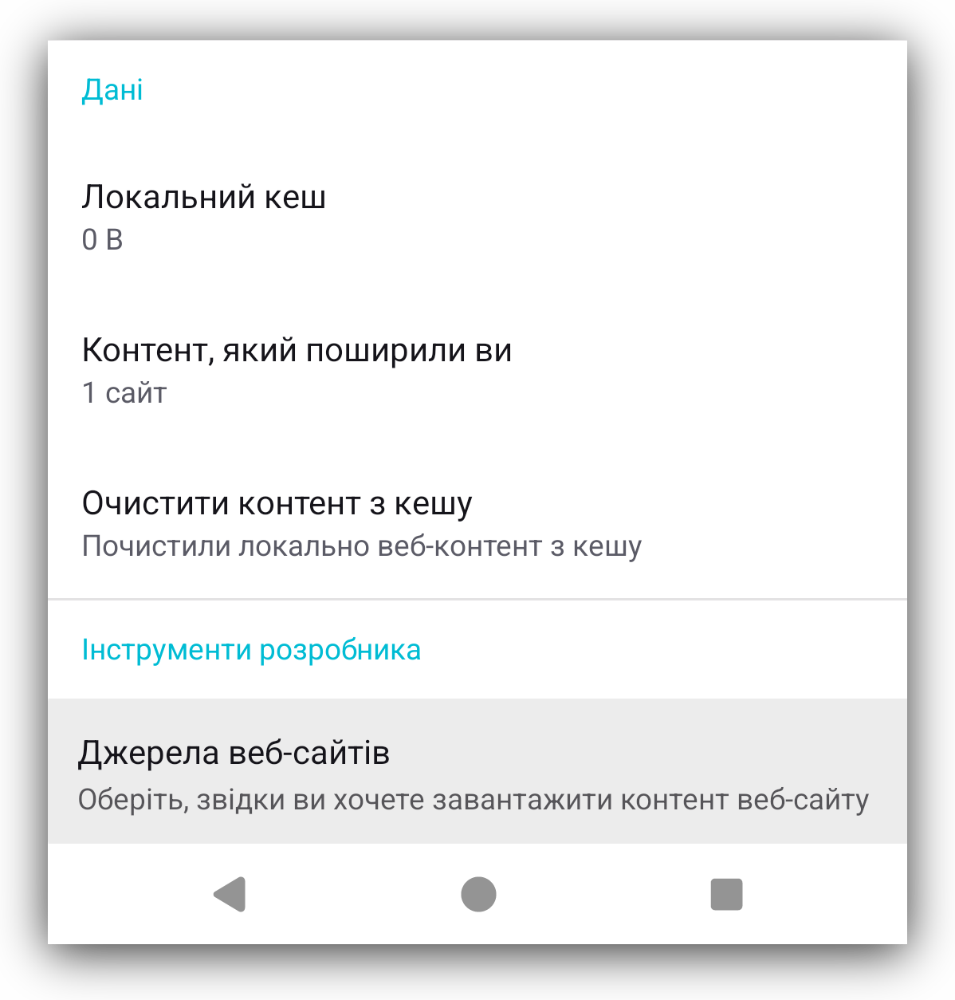
У цьому випадку ризики для вас як користувача аналогічні ризикам, пов’язаним із використанням будь-якого іншого браузера. Дізнайтеся більше.
Контент отримано через публічну мережу Ceno
Коли Ceno не може зв'язатися з вихідним сервером, він намагається отримати до нього доступ через загальнодоступну мережу Ceno.

Ця мережа містить захищені сервери, які називаються інжекторами, які мають прямий доступ до вихідних веб-сайтів і вводять вміст цих веб-сайтів у мережу Ceno. Коли вміст веб-сайту отримується через публічну мережу Ceno, це буде позначено помаранчевою крапкою на маленькій кнопці Ceno у вашій адресній стрічці.
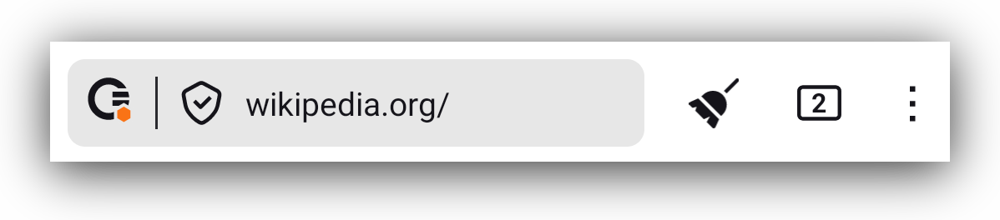
Натискання на цю кнопку відкриє невелике вікно, яке повідомить вам, скільки компонентів веб-сайту було отримано з публічної мережі Ceno.
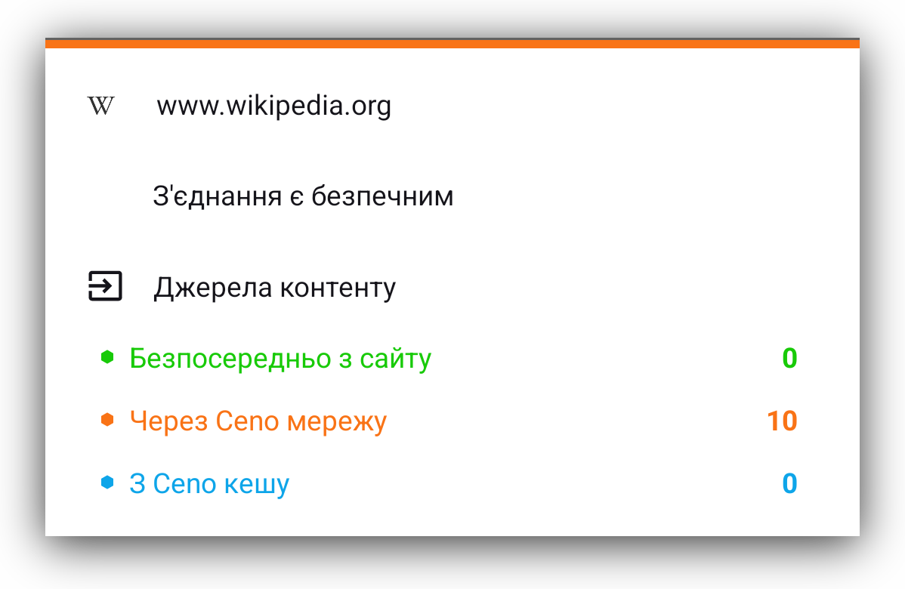
Будь-який веб-сайт, до якого ви отримаєте доступ таким чином, буде збережено в локальному кеші вашого браузера Ceno та буде доступний іншим учасникам мережі Ceno.
Ви можете переглянути, які веб-сайти зберігаються у вашому кеші, перейшовши до розділу Налаштування > Дані.
У цьому розділі є три пункти: Локальний кеш, Видалене вами вміст та
Очистити кешований вміст.
У розділі Локальний кеш показано, скільки даних було збережено в кеші Ceno
на вашому пристрої.
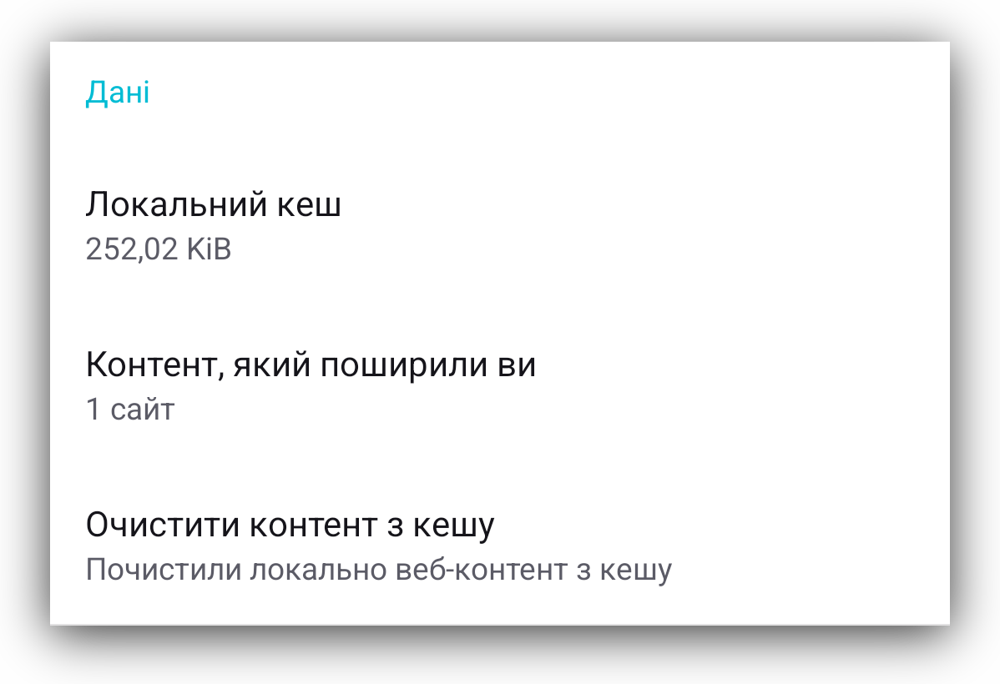
Якщо ви натиснете Контент, яким ви поділилися, ви зможете побачити вебсайти, які ваш пристрій може зробити доступними для мережі Ceno.

Натискання опції Очистити кешований вміст дозволить вам видалити всі кешовані дані.
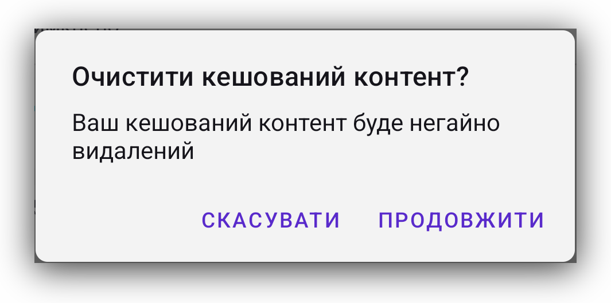
Кешований вміст
Цей спосіб доступу до веб-сайтів корисний, коли інші компоненти публічної мережі
Ceno недоступні або коли ви вирішили отримати доступ до веб-сайту з пристроїв
своїх колег з інших причин.
На малюнку нижче показано запити та відповіді, обмінені між членами мережі Ceno,
які раніше отримували доступ до потрібних веб-сайтів і зберегли їх у кеші.

Якщо вміст веб-сайту отримується через кеш Ceno, кнопка Ceno матиме маленьку синю крапку, яка це вказує.
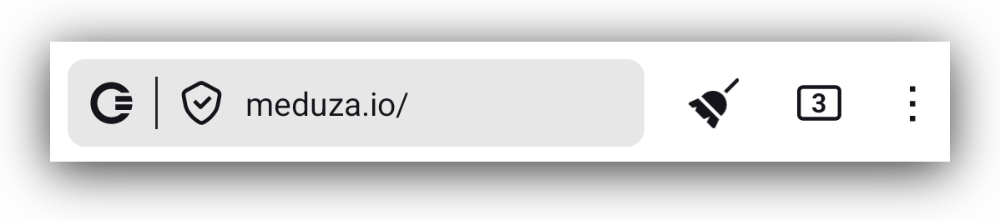
Натискання кнопки Ceno відкриє інформаційний екран із відповідним повідомленням.
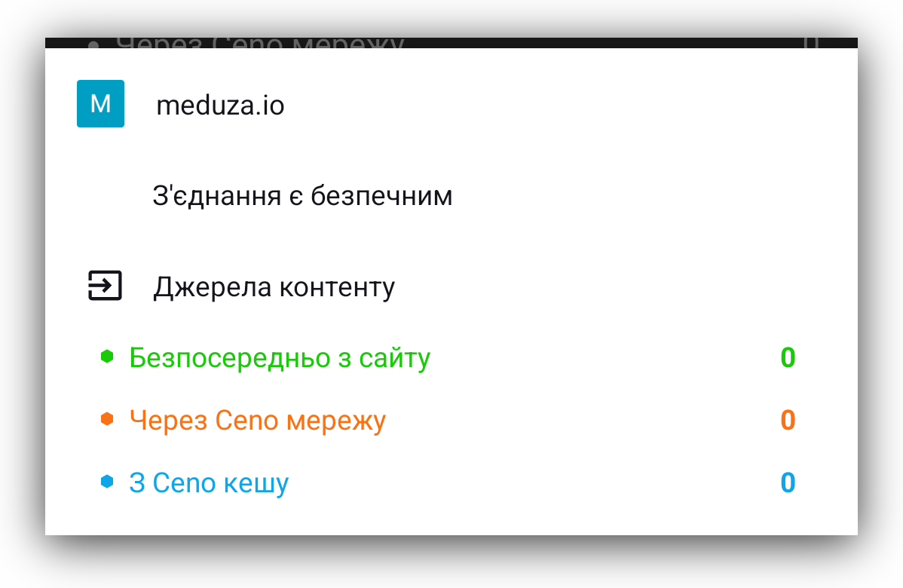
У цьому випадку вміст веб-сайту буде кешовано на вашому пристрої та надано іншим користувачам Ceno за запитом. Ви можете перевірити це, перейшовши в Налаштування
Дані > Вміст, до якого ви поділилися.
Також може статися так, що браузер Ceno відкриє веб-сайт, який був збережений у вашому кеші під час попереднього відвідування. У цьому випадку Ceno повідомить вас про це, відобразивши джерела веб-сайту сірим кольором.
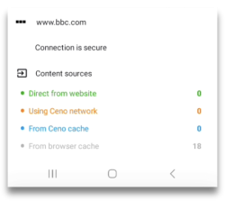
У налаштуваннях Ceno > Інструменти розробника > Джерела веб-сайтів ви можете встановити або зняти прапорці з цих чотирьох параметрів.
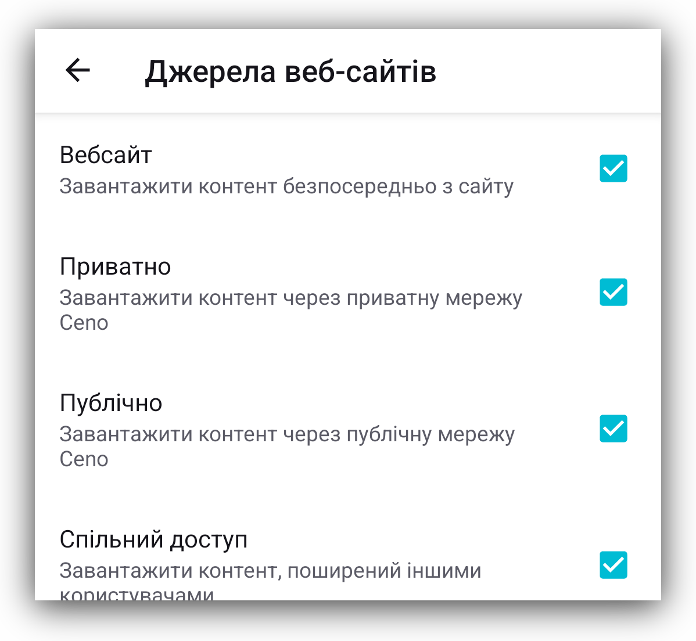
Якщо всі вони відмічені, залежно від режиму перегляду, Ceno намагається завантажити веб-сайт за допомогою всіх відповідних механізмів одночасно. Ми називаємо це «змішаним завантаженням». Використовується той механізм, який відповість першим, а решта запитів скасовуються.
Для найкращих результатів радимо завжди залишати позначеними всі 4 ці пункти.
Персональний перегляд – коли його використовувати
Ви можете вибрати особистий перегляд, натиснувши кнопку «Особистий» на головному екрані.
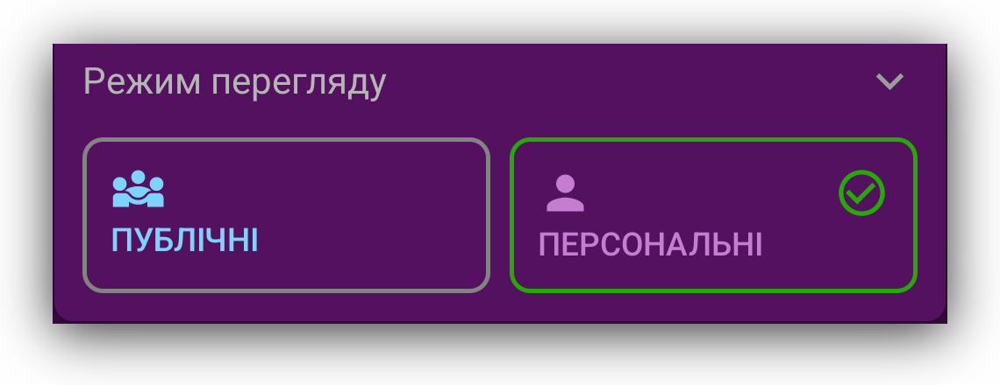
Якщо ви оберете цю опцію, навіть якщо всі чотири налаштування Джерела веб-сайтів позначено, ваш додаток Ceno намагатиметься отримати доступ до потрібних веб-сайтів лише безпосередньо або через приватну мережу Ceno.
Цей режим перегляду можна використовувати для веб-сайтів, на яких потрібно входити в систему та вводити інші особисті дані. Приклади: веб-сайти для покупок, електронна пошта, соціальні мережі або інші веб-сайти, якими ви не бажаєте ділитися з рештою мережі Ceno.
Доступ до веб-сайтів через приватну мережу ceno
На наступному зображенні показано потік запитів та відповідей веб-сайту між елементами приватної мережі Ceno.

У режимі особистого перегляду, коли запитується веб-сайт, Ceno отримує його безпосередньо з вихідних серверів або через Ceno Injectors. Однак у особистому режимі Injectors не кешують вміст, як це роблять у режимі публічного перегляду. Вони просто пересилають запит на вихідний сервер і пересилають відповідь користувачеві, але не можуть бачити зашифрований вміст. Дізнайтеся більше про режим особистого перегляду.
Іноді, якщо вебсайт недоступний у режимі публічного перегляду через різницю в роботі цих двох режимів, ми рекомендуємо спробувати отримати до нього доступ через режим особистого перегляду.
Щоб цей механізм працював, необхідно, щоб джерела веб-сайту Приватно та Веб-сайт залишалися перевіреними.
Чому варто стати мостом Сено?
Однорангова мережа будується з кожного підключеного до неї вузла (так, це стосується і вас!). Чим більше вузлів, тим сильнішою та універсальнішою стає мережа.
Якщо ви використовуєте браузер Ceno в країні, де не застосовується цензура в Інтернеті (або вона не така сувора, як в інших країнах), розгляньте можливість допомогти іншим користувачам Ceno, ставши проміжним вузлом. Ви почнете маршрутизувати трафік між клієнтами, які проживають у країнах з суворою цензурою, та інжекторами Ceno.
Ви не зможете бачити їхній трафік (він надсилатиметься через зашифрований тунель), а також жодна частина цього трафіку не залишатиметься на вашому пристрої.
Примітка: Конфігурація, описана в цьому розділі, також може допомогти вашому пристрою ефективно поширювати контент іншим користувачам у розподіленому кеші, тому, будь ласка, розгляньте можливість її застосування, якщо ви використовуєте Ceno в країні, де діє цензура (але майте на увазі ризики поширення такого контенту іншим користувачам)
Як стати мостом Сено?
Як зазначено в цьому розділі, додаток Ceno надає деякі функції, які дозволяють вам легко стати мостом Ceno, якщо це дозволяє конфігурація вашої мережі.
Якщо ви перевірили свою досяжність та статус UPnP, і вони виглядають так
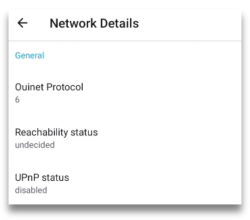
Вам потрібно буде налаштувати маршрутизатор, або ввімкнувши UPnP, або налаштувавши переадресацію портів. У наступних розділах ми опишемо кроки, які необхідно виконати.
Увімкнення UPnP на маршрутизаторі Wi-Fi
UPnP — це найпростіший спосіб зробити ваш браузер Ceno (або комп’ютерний клієнт) доступним для мережі Ceno.
Примітка. Увімкнення UPnP на маршрутизаторі Wi-Fi може наражати пристрої у вашій мережі на зовнішні перешкоди. Будь ласка, усвідомте ризики, а також розгляньте можливість використання альтернативних методів, як описано нижче.
Перше, що вам потрібно зробити, це увійти в веб-інтерфейс вашого маршрутизатора. Щоб дізнатися, як це зробити, зверніться до посібника користувача маршрутизатора, в якому вказано, який логін і пароль потрібно використовувати для входу.
Після цього кроки, які потрібно виконати, схожі, але можуть відрізнятися для всіх моделей маршрутизаторів.
Ось гарна стаття з покроковими інструкціями щодо ввімкнення UPnP на різних маршрутизаторах.
Будь ласка, знайдіть інструкції для вашого типу маршрутизатора та виконайте необхідні кроки.
Однак, якщо хочете, можете налаштувати переадресацію портів замість UPnP.
Використання переадресація портів як альтернативи UPnP
Перший крок такий самий, як і раніше: увійдіть у веб-інтерфейс маршрутизатора.
Потім, будь ласка, знайдіть опцію переадресація портів.
Щоб побачити, на яку IP-адресу потрібно переадресовувати з’єднання та відповідний порт, відкрийте сторінку Налаштування Ceno та знайдіть розділ Локальні кінцеві точки UDP.

Переадресація портів має бути для протоколу UDP (не TCP).
Ceno вибирає випадковий порт при першому запуску і зберігає його для наступних запусків, але локальна мережева IP-адреса вашого пристрою може час від часу змінюватися. Тому вам слід періодично перевіряти сторінку Налаштування Ceno, щоб переконатися, що ваш пристрій доступний для мережі Ceno.
Ваш пристрій доступний, якщо його
Статус досяжності – ймовірно досяжний або досяжний
Статус UPnP: увімкнено
Технічне зауваження: Або ж ви можете переконатися, що маршрутизатор завжди призначає вашому пристрою однакову IP-адресу (наприклад, через статичну оренду DHCP для MAC-адреси пристрою)
Якщо у вас є комп’ютер із хорошим підключенням, який залишається ввімкненим більшу частину часу, і ви хочете налаштувати його як міст Ceno, будь ласка, продовжуйте читати.
Запуск моста на компʼютері
Якщо ваш комп'ютер підтримує контейнери Docker, ви можете запустити на ньому
попередньо налаштований клієнт Ceno, який буде виконувати функцію моста. Якщо
Docker ще не встановлено, дотримуйтесь інструкцій, щоб встановити Docker Engine
на вашій платформі. Для похідних Debian, таких як Ubuntu або Linux Mint, просто
запустіть: sudo apt install docker.io
Щоб розпакувати контейнер клієнта Ceno, достатньо виконати наступну команду в терміналі (вона виглядає лячно, але Ви можете просто скопіювати та вставити її в командний рядок):
sudo docker run --name ceno-client \
-dv Ceno:/var/opt/ouinet --network host \
--restart unless-stopped equalitie/Ceno-client
Якщо операційна система Вашого компʼютера не GNU/Linux, команда повинна бути трохи іншою:
sudo docker run --name ceno-client \
-dv ceno:/var/opt/ouinet \
-p 127.0.0.1:8077-8078:8077-8078 -p 28729:28729/udp \
--restart unless-stopped equalitie/ceno-client
Команда запустить контейнер з назвою ceno-client, який працюватиме під час кожного завантаження, якщо ви явно не накажете йому зупинитися.
Будь ласка, перегляньте документацію клієнта Ceno Docker для отримання додаткової інформації про те, як маніпулювати контейнером.
Особливості
Панель інструментів
Внизу екрана ви побачите панель з різними кнопками. Деякі з них, ймовірно, зрозумілі самі по собі, інші — менш. Давайте коротко розглянемо кожну з них:
Кнопка «Головна»
Перша – це знайома кнопка «Головна».

Ви можете налаштувати цю кнопку так, щоб вона була відображена або прихована, але перейдіть у Налаштування > Налаштування > Показати кнопку «Головна»
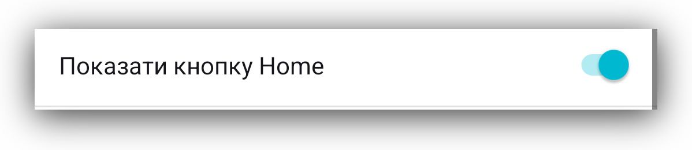
Кнопка Ceno
Далі йде кнопка Ceno. Натиснувши на неї, ви відкриєте інформаційний екран, який показує, звідки були отримані компоненти веб-сайту. Ми описуємо цей екран більш детально в розділах «Особистий та публічний перегляд».
Кнопка безпечного з'єднання
Коли ви вводите адресу веб-сайту, до якого хочете отримати доступ, ви побачите
кнопку «Безпечне з'єднання», позначену маленьким замком або маленьким щитом,
що вказує на те, що ваше з'єднання з певним веб-сайтом є безпечним.
Якщо замок або щит перекреслені лінією, це означає, що з'єднання з цим
веб-сайтом не є безпечним. Це так само, як і в інших браузерах.

Примітка: незважаючи на те, що з'єднання з цим конкретним веб-сайтом не є безпечним, на піктограмі Ceno є маленька зелена крапка. Ця крапка не означає, що з'єднання є безпечним, а лише те, що дані були отримані безпосередньо з оригінального веб-сайту.
Якщо ви натиснете на нього, ви побачите деталі цього з’єднання. Як ілюстрацію, ми наводимо приклади скріншотів безпечного та незахищеного з’єднання.


Кнопка «Очистити»
Перша кнопка праворуч від адресного рядка — це кнопка «Очистити» у формі маленької мітли.
Натиснувши на нього, користувач може вибрати, чи очистити всі дані Ceno, ніби Ceno ніколи не використовувався, чи очистити лише те, що Ceno зберігав у кеші. Перший варіант очищає всі налаштування, закладки, параметри та індивідуальні налаштування, а другий — лише веб-сайти, які додаток Ceno зберігав у кеші на вашому пристрої.
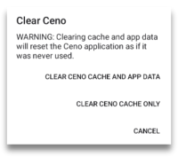
Якщо ви перейдете до Налаштування > Налаштування > Кнопка очищення, ви можете вибрати, де ви хочете, щоб кнопка очищення відображалася на панелі інструментів чи в меню.
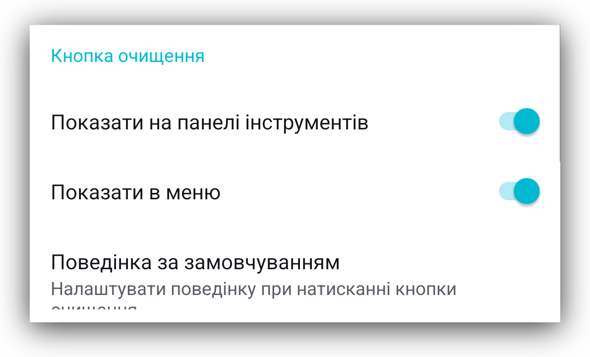
Натиснувши на опцію Default behavior (Стандартна поведінка), ви відкриєте діалогове вікно, в якому зможете вибрати, що має робити кнопка Clear (Очистити) при натисканні. Вона може запропонувати вам підказку, як на знімку екрана вище, або одразу видалити весь кешований вміст чи навіть усі дані Ceno.
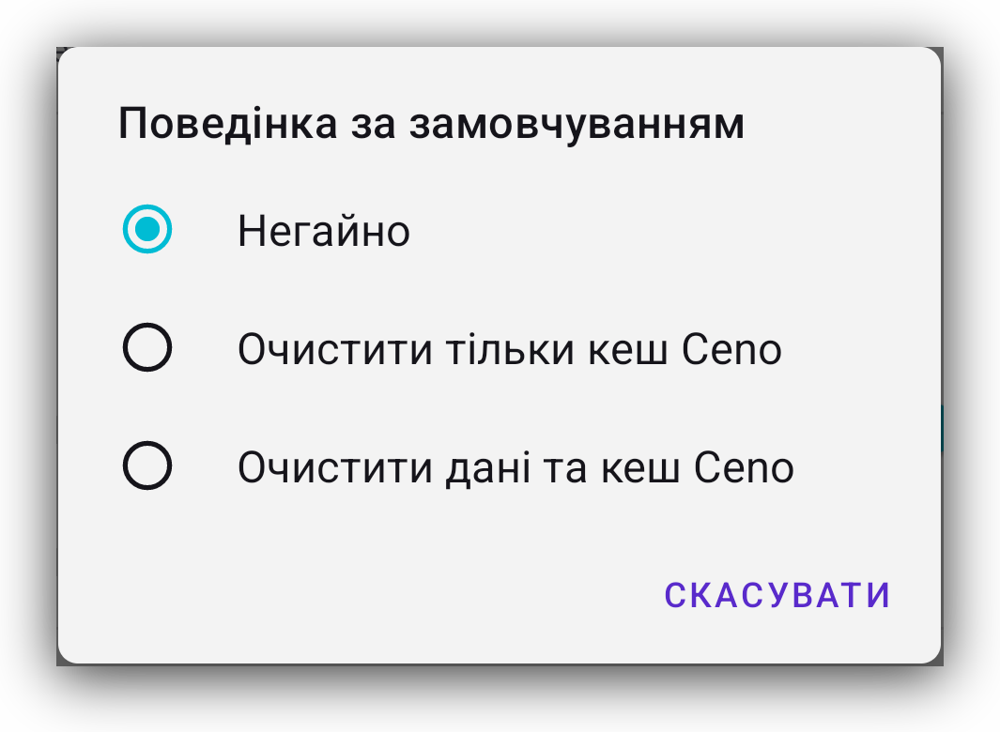
Кнопка вкладок
Далі знаходиться маленький прямокутник із числом усередині. Це число показує, скільки вкладок відкрив користувач.
Натискання на нього відкриває екран, де ви можете побачити всі відкриті вкладки.
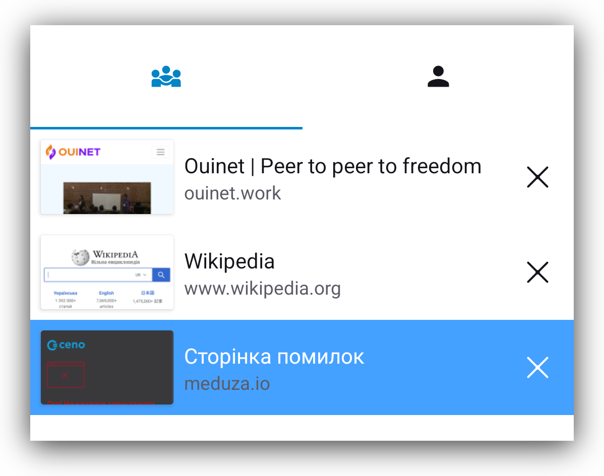
Ви можете закривати їх по одному, якщо натиснути на вертикальне меню в правому нижньому куті, ви отримаєте опцію закрити їх усі разом.
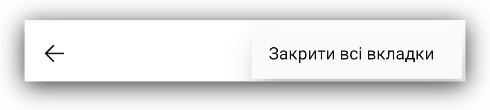
Під час перегляду екрана вкладок у верхній частині екрана ви побачите значки для публічного або особистого перегляду, і ви можете легко перемикатися між ними.
Перегляд, коли вибрано значок публічного перегляду
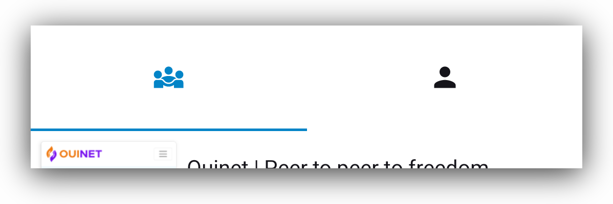
Перегляд, коли вибрано особистий перегляд.
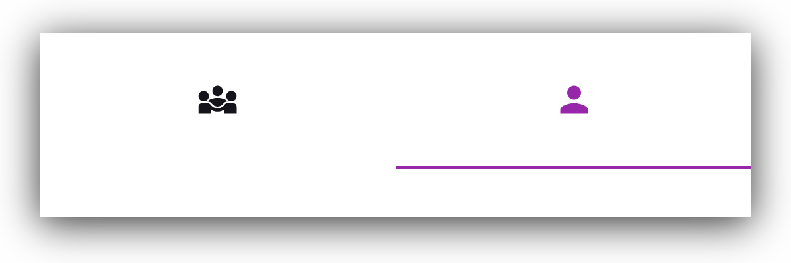
Вертикальне меню
Те, що відображається у вертикальному меню з трьох крапок у крайній правій частині панелі інструментів, залежить від контексту.
- Коли у вас відкрита сторінка веб-сайту, це меню відображатиме параметри, що стосуються цієї сторінки.
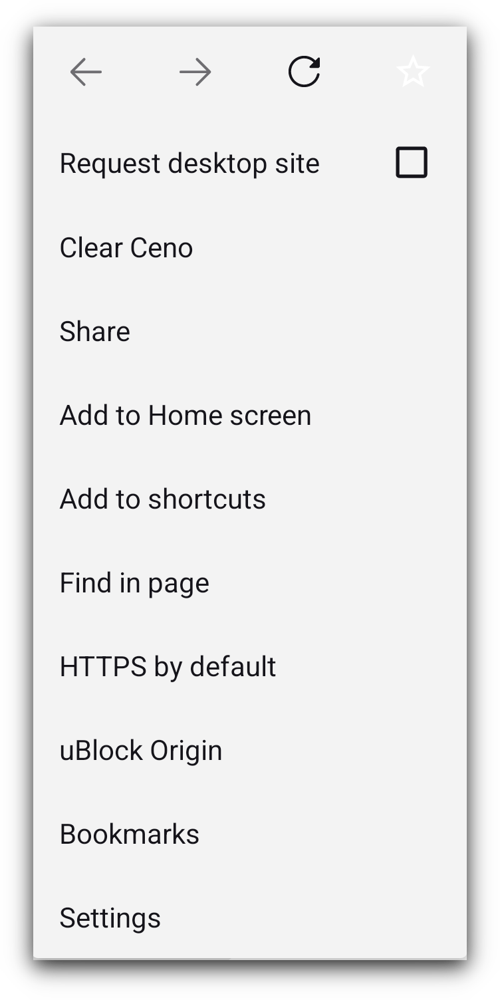
Більшість елементів у цьому меню зрозумілі самі по собі. Але якщо ви не знайомі з uBlock Origin, то це блокувальник реклами та трекерів.
Причина, чому ми об'єднуємо його з нашим браузером Ceno, полягає головним чином у запобіганні непотрібному кешуванню реклами та можливому кешуванню унікальних ідентифікаторів, пов'язаних з трекерами.
Щоб дізнатися більше про цей блокувальник реклами та відстеження, відвідайте їхню веб-сторінку.
- Якщо ви натиснете на це меню на головній сторінці Ceno, ви зможете побачити елемент, який дозволяє вам очистити Ceno (його дія така ж, як і маленька мітла на головному екрані).
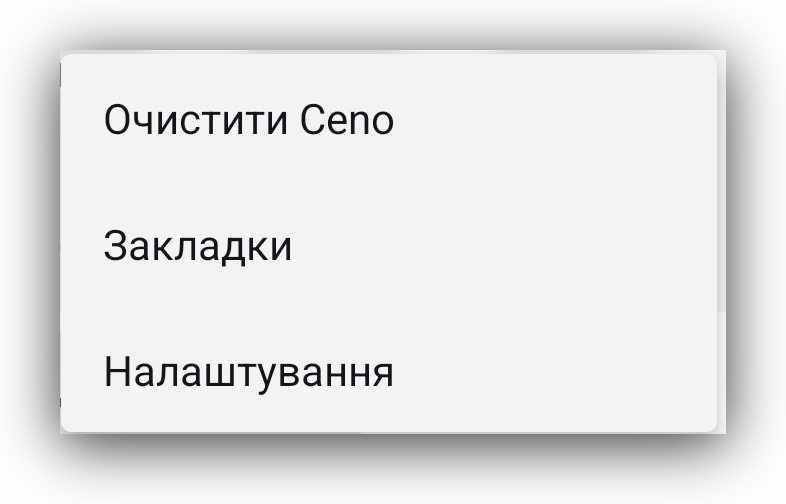
- Коли ви перебуваєте на екрані вкладок, натискання цього меню надасть вам лише опцію «Закрити всі вкладки»
Налаштуваннях
Доступ до налаштувань здійснюється через вертикальне меню з трьома крапками, а потім вибирається опція «Налаштування».
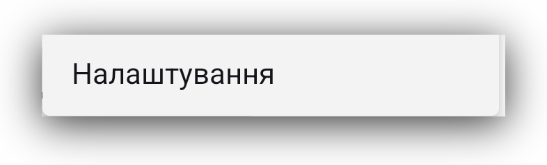
Вони поділяються на 5 груп:
Загальне
Дозволи
Дані
Інструменти розробника
Про нас
Давайте розглянемо кожен з них.
Налаштування: Загальні
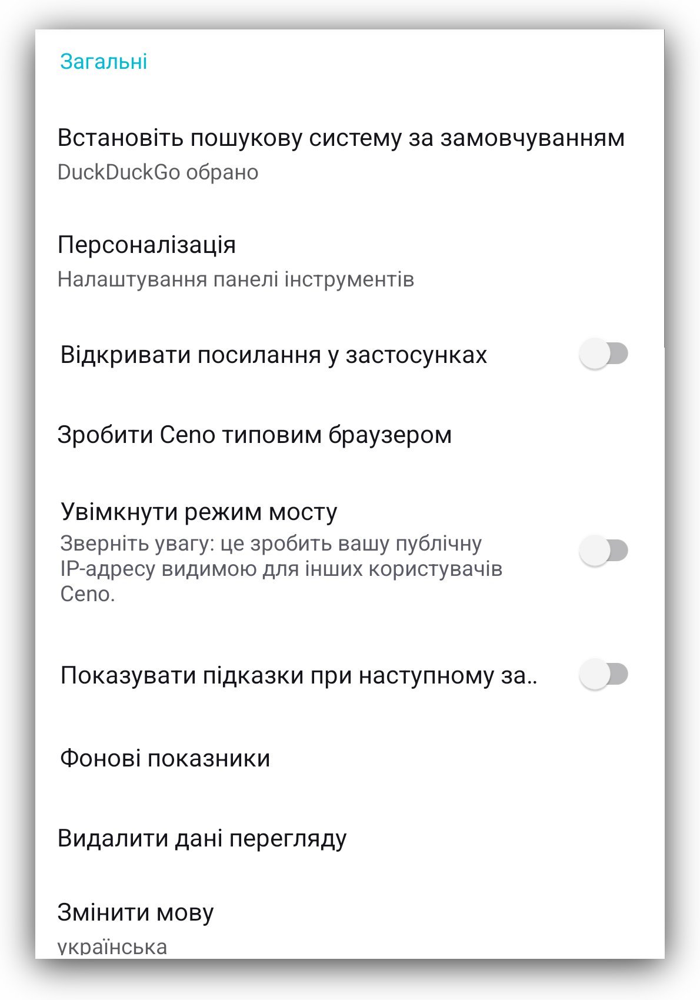
Ви, ймовірно, знайомі з більшістю цих налаштувань, оскільки вони схожі на опції, доступні в інших браузерах. У наступних розділах ми коротко опишемо основні з них.
Встановіть пошукову систему за замовчуванням
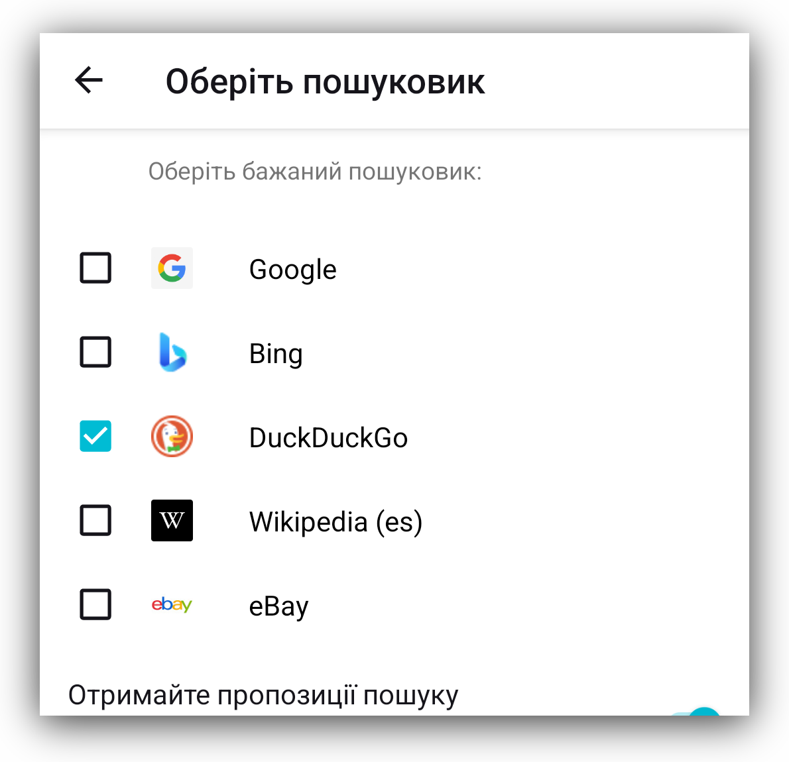
Цей параметр дозволяє встановити пошукову систему за замовчуванням для браузера Ceno, встановивши або знявши прапорці з наданих опцій.
Персоналізація
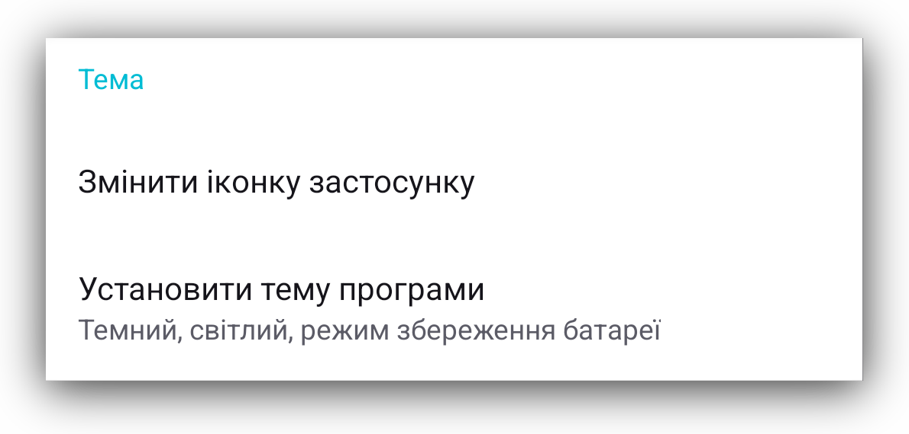
Знову ж таки, ці варіанти здебільшого зрозумілі самі по собі.
Хочемо звернути вашу увагу на опцію, якої може не бути в інших додатках. Ceno дозволяє змінювати іконку запуску, що може бути корисно в деяких випадках. Ми пропонуємо кілька варіантів на вибір.
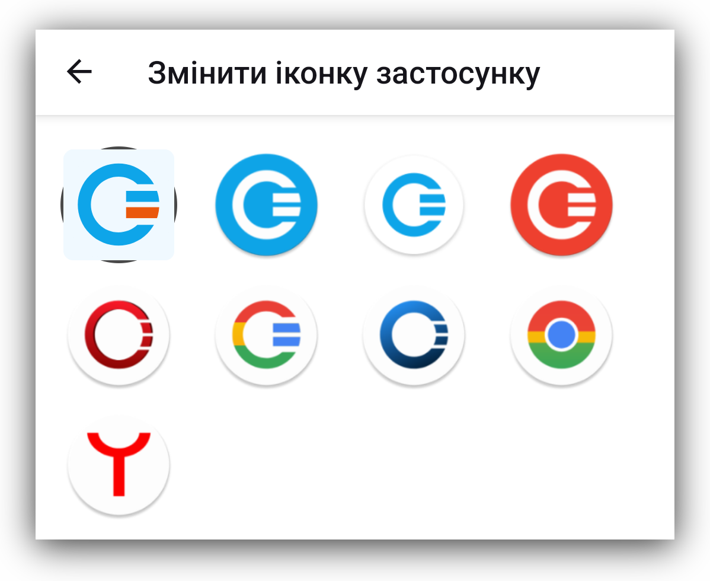
Увімкнути режим мости
Призначення та функціональність режиму мосту високого рівня описано в розділі Режим мосту. Тут ви можете ввімкнути або вимкнути цей параметр.
Фонові показники
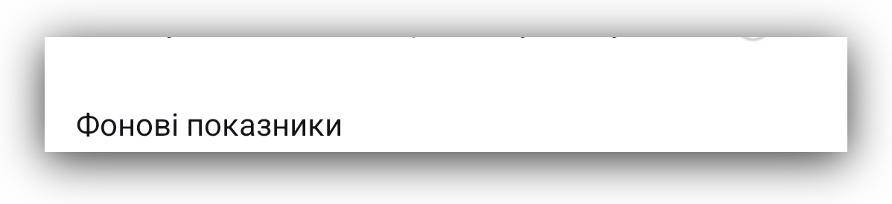
Це показники, які допомагають нам зрозуміти будь-які проблеми, що можуть час від часу виникати під час використання браузера Ceno. Натиснувши на «Показники фону», ви відкриєте екран, на якому можна вимкнути показники.
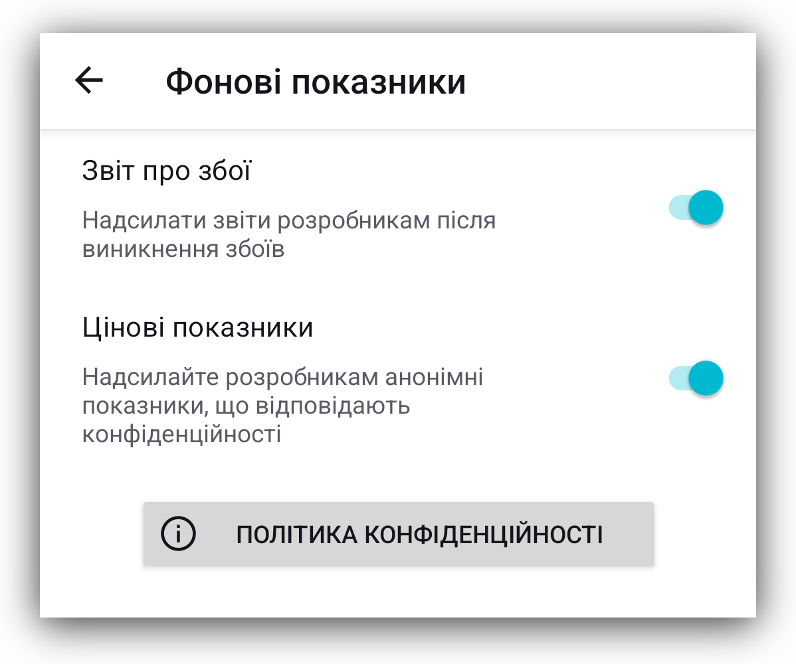
Ми рекомендуємо залишити ці налаштування у положенні «Увімкнено», оскільки вони допомагають нам зрозуміти проблеми, з якими можуть зіткнутися деякі користувачі під час використання Ceno. Чим краще ми розуміємо проблеми, тим ефективніше можемо їх вирішувати.
Ми не збираємо жодних персональних даних і не продаємо жодних даних третім особам. Щоб ознайомитися з нашою політикою конфіденційності, натисніть кнопку «Політика конфіденційності».
Звіт про збої
Обставини, умови мережі та пристрої, на яких використовується Ceno, відрізняються для різних користувачів, що іноді може призвести до збою програми Ceno. Щоб зрозуміти, що спричинило збій у конкретній ситуації, Ceno було розроблено таким чином, щоб генерувати звіти про збій та надсилати їх команді розробників. Ви, як користувач, можете увімкнути або вимкнути надсилання звітів про збій.
Ці звіти не містять жодних персональних даних. Якщо у вас виникають збої Ceno, радимо ввімкнути цей параметр
Видалити Дані Перегляду
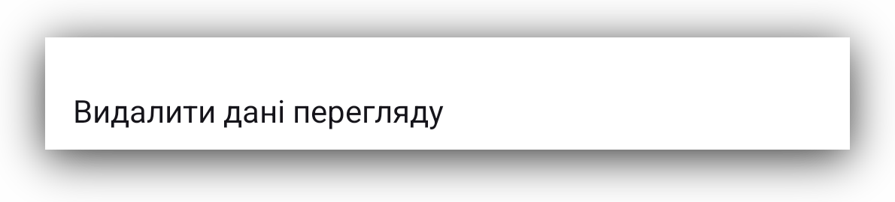
Натискання на цю опцію надає вам можливість вибрати, які дані Ceno ви хочете видалити.
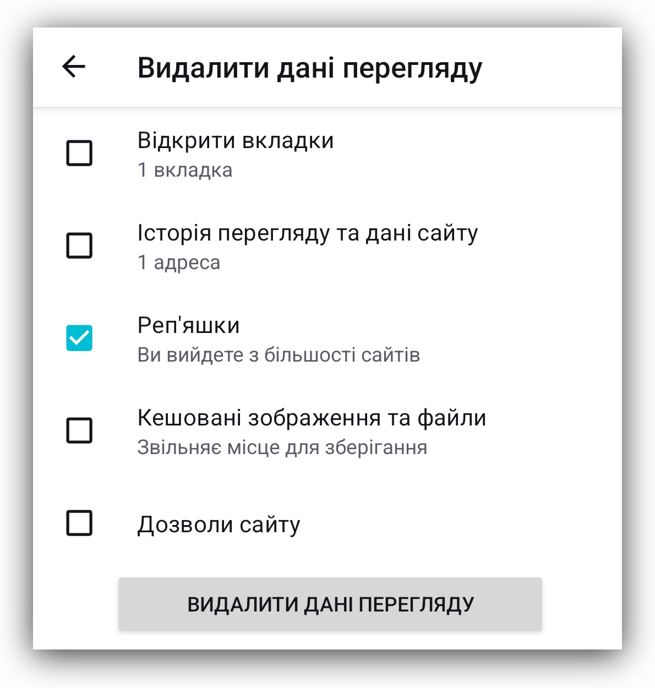
Кнопка «Очистити» на головному екрані видаляє всі дані Ceno, але тут ви можете вибрати, що видалити, а що зберегти.
Змінити мову
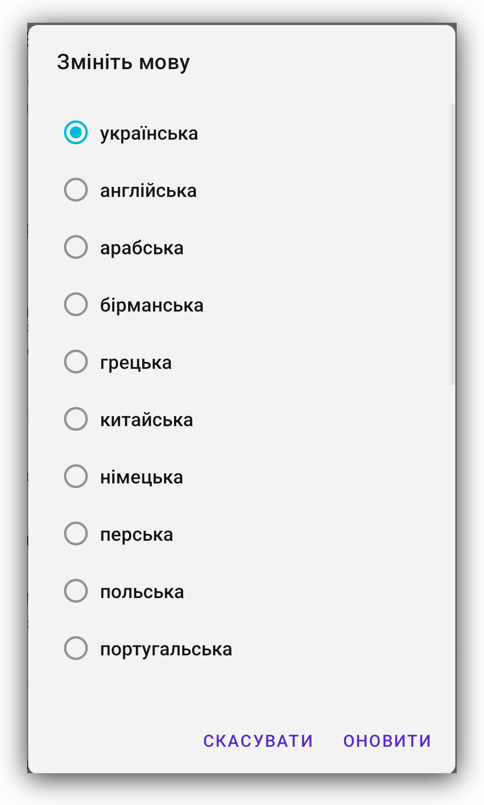
Додаток Ceno перекладено багатьма мовами. Якщо ви хочете, щоб до цього вже досить великого списку додали ще одну мову, повідомте нас про це. Ви можете зв’язатися з нами електронною поштою support [at] ceno [dot] app або через наш репозиторій gitlab .
Налаштування: Дозволи
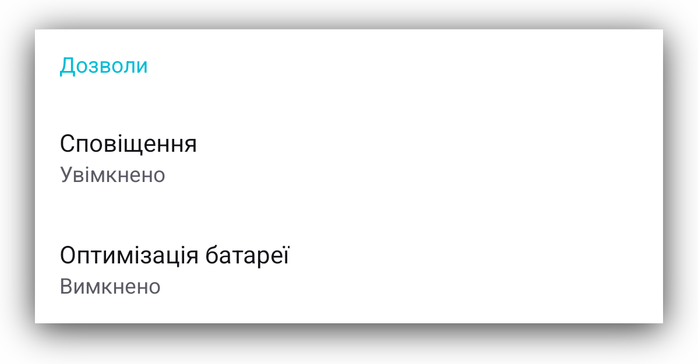
Ceno потребує лише двох дозволів: надсилання повідомлень користувачеві та зупинення оптимізації батареї. Ймовірно, вас попросили надати Ceno ці дозволи, коли ви вперше запустили додаток Ceno або після перезапуску після очищення всіх даних Ceno.
Більше про них можна дізнатися в розділі Дозволи.
Налаштування: Дані
У цьому розділі ви можете переглянути, яким контентом ваш додаток Ceno може ділитися з іншими користувачами Ceno, коли вони цього запитують.
Контент, яким ви поділилися містить список вебсайтів, якими ви можете ділитися з іншими користувачами Ceno через ваш додаток Ceno.
Локальний кеш повідомляє вам, скільки даних може бути завантажено з вашого пристрою в мережу Ceno, коли інші користувачі цього запитують.
Натиснувши на опцію Очистити кешований вміст, ви видалите дані з кешу, і вам не залишиться нічого, що можна було б поділитися з друзями. Щоб зберегти веб-сайти в кеші і мати можливість знову поділитися ними з друзями, вам потрібно буде ще раз зайти на них через мережу Ceno Public.
Більше інформації про призначення цих налаштувань доступно в розділі Публічний або особистий доступ.
Налаштування: Інструменти розробника
Джерела веб-сайтів
Ceno може отримувати вміст веб-сайтів, який ви запитуєте, з різних джерел:
безпосередньо з веб-сайту-джерела, публічної мережі Ceno, приватної мережі Ceno
та кешу Ceno. Більш детальна інформація про ці опції наведена в розділах, що
описують режими публічного та особистого перегляду.
За замовчуванням усі ці опції відмічені, і для досягнення найкращих результатів
ви можете просто залишити їх без змін.
Більш детальну інформацію щодо цих опцій можна знайти в розділі Публічний або особистий.
Захист від відстеження
Ці два налаштування запобігають відстеженню вашої онлайн-активності сторонніми трекерами.
Деталі Мережі
У цьому розділі містяться відомості про налаштування вашої мережі, які можуть бути корисними для нашої команди розробників, якщо нам потрібно буде дослідити будь-які проблеми, про які ви нам повідомляєте.
Увімкнути файл журналу (логи)
Увімкнення та експорт файлу журналу Ceno може бути корисним під час розслідування проблем. Ці файли не містять жодних даних, що дозволяють ідентифікувати особу. Якщо ви експортуєте їх до файлової системи на своєму пристрої, ви зможете переглянути їхній вміст. Ви також можете поділитися ними з нашою командою розробників, якщо у вас виникли проблеми, які можуть потребувати розслідування нашими технічними експертами.
Налаштування: Про нас
Містить додаткову інформацію про вашу інсталяцію Ceno, включаючи номер версії, стан фонової служби Ceno та номер версії бібліотеки Ouinet, вбудованої в Ceno.